相片集
二十年的課堂、舞台和學生的成績，都在這裏。
教學留影
屯門課室的日常：吹口、手形、呼吸，都在一堂一堂之間慢慢調整。

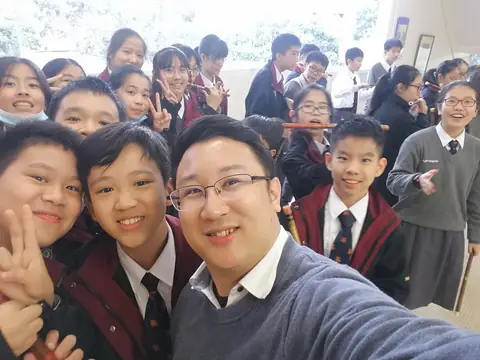
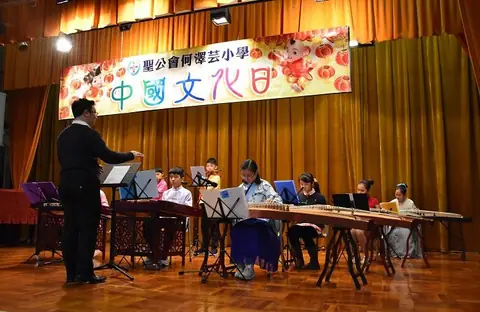

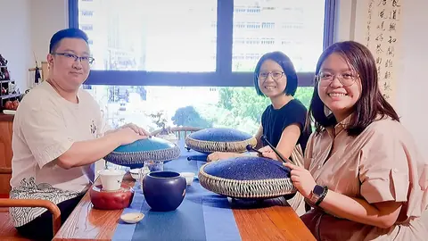


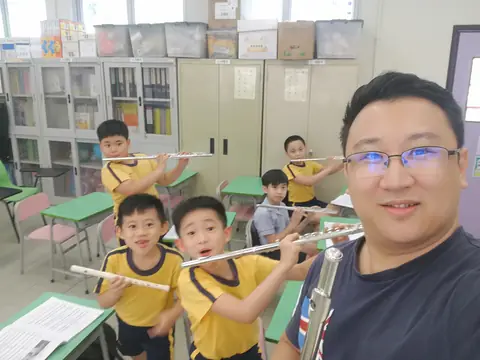
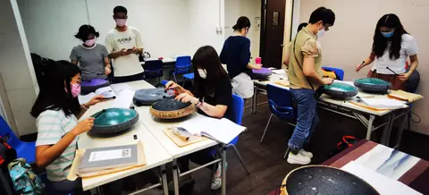

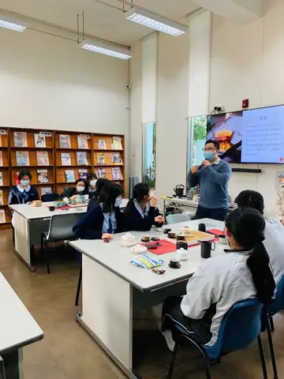


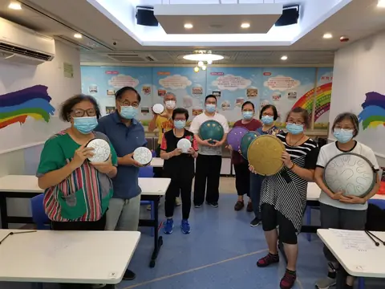
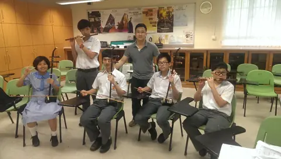
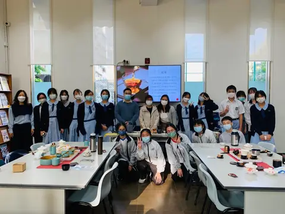
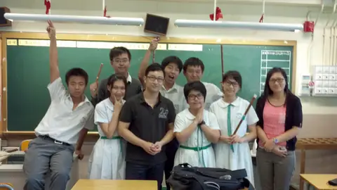
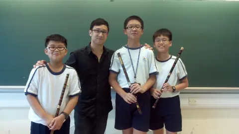
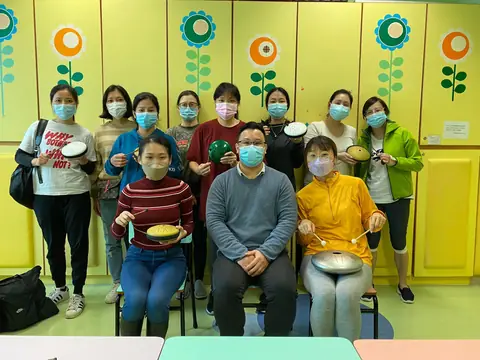
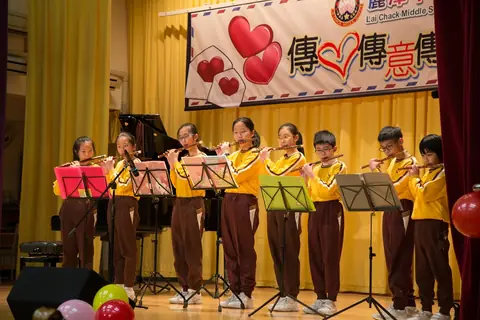
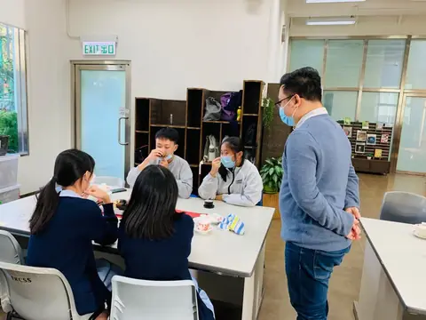
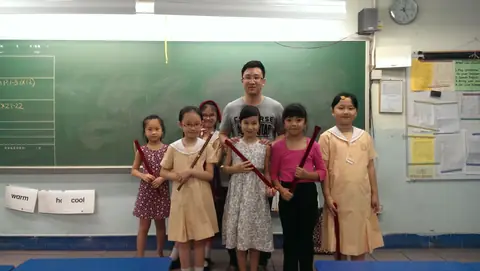
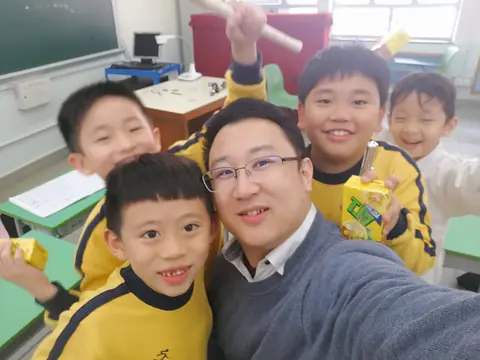
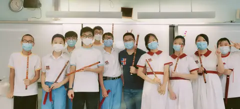
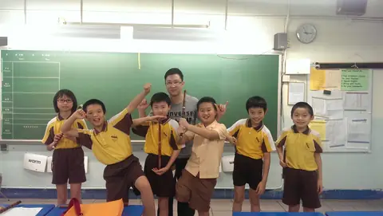
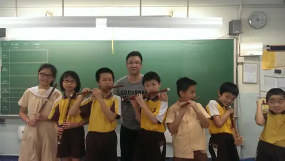
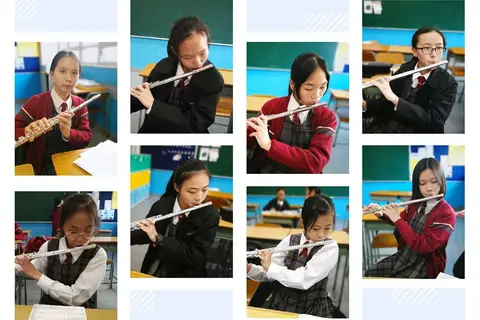

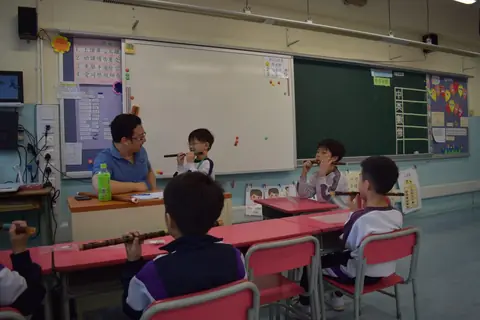
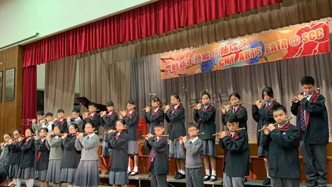
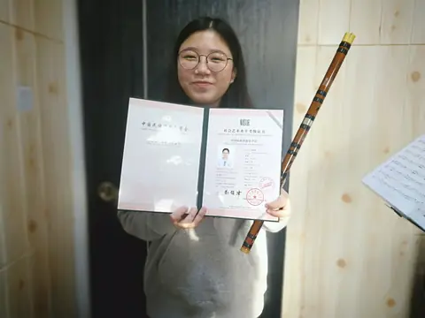
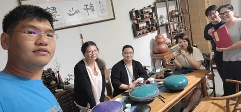

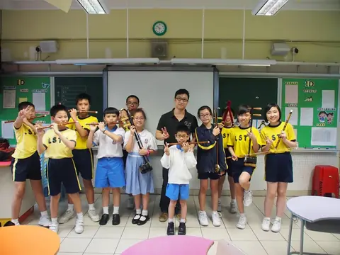
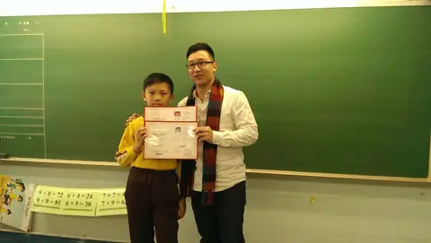
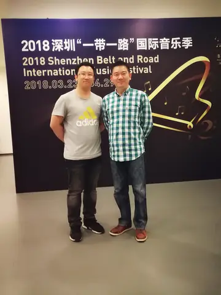
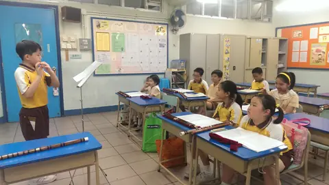
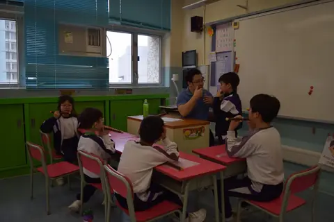
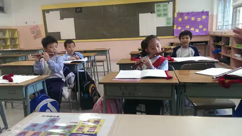
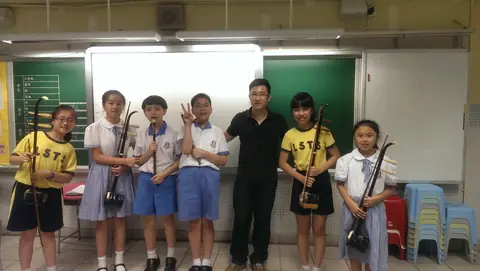
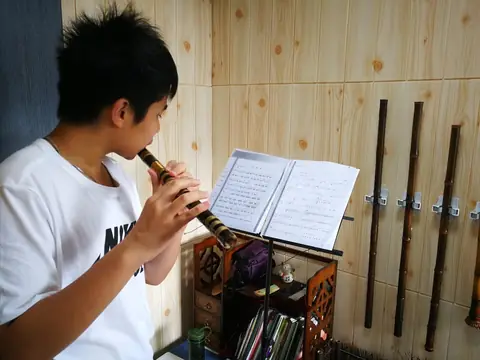
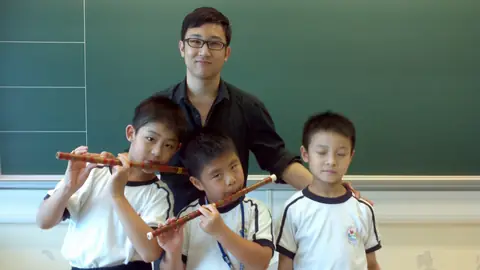


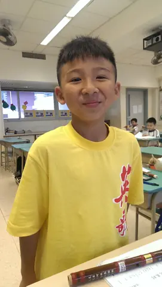
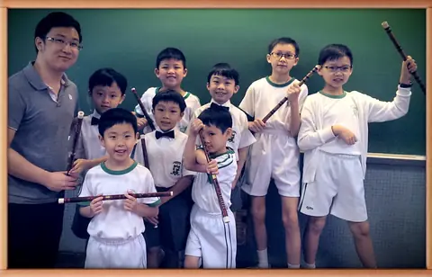


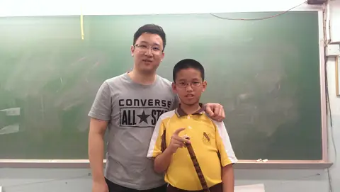
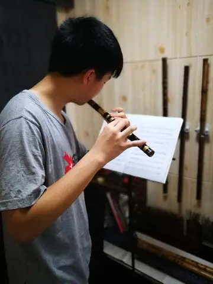
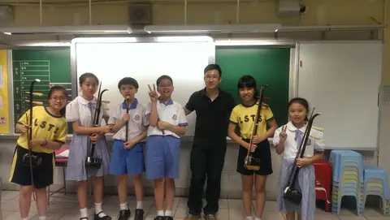

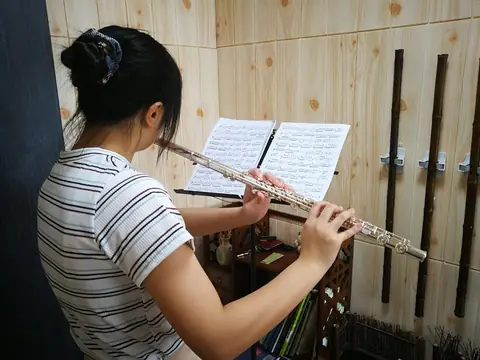
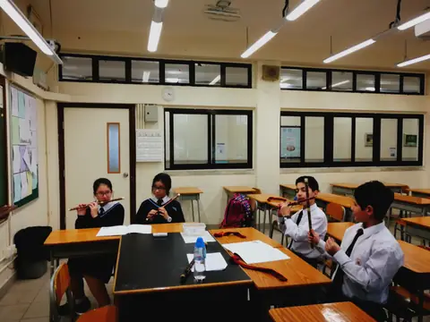
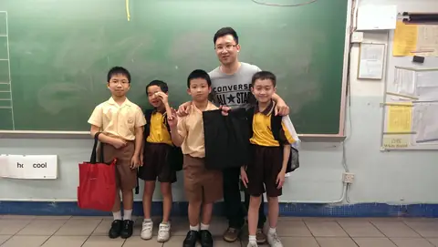
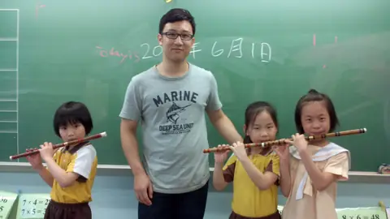
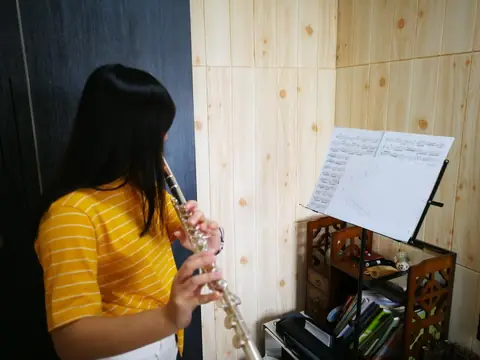
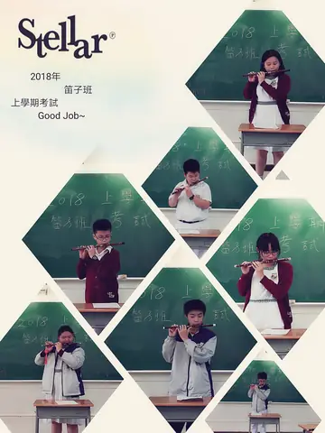
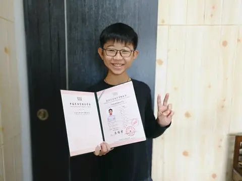
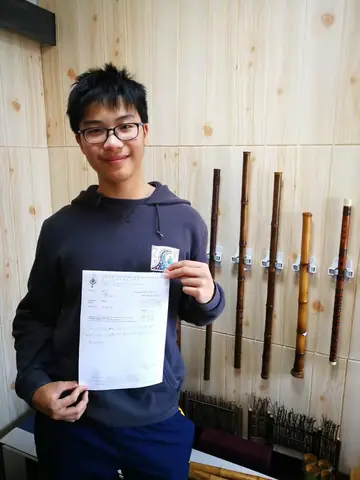
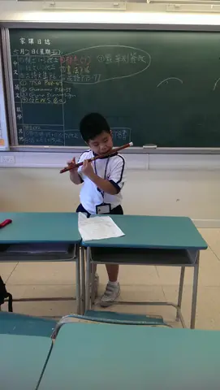
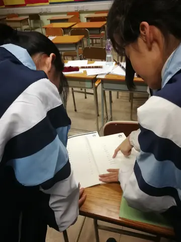
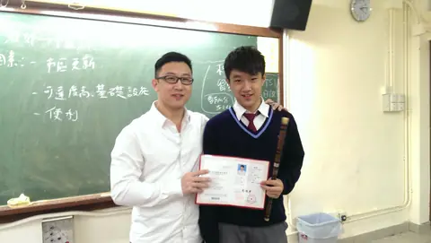
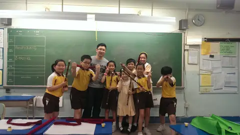


演出照片
長笛、竹笛、洞簫的獨奏、合奏與指揮。2007 年隨團到北京演奏廳演出，2011 年參與錄製 CCTV「魅力校園」。


演出剪影
舊站影片封面用過的演出相片，包括 CCTV「魅力校園」。


學生成績與獎項
部分學生的比賽獎項、考級證書與考官評語。


曾經合作的學校與機構
張老師曾擔任四十多間中小學的竹笛及指揮工作，亦與嶺南大學、城市大學、VTC 展亮技能發展中心、東華三院「健康校院計劃」、傷殘青年協會、YMCA、保良局、明愛、聖公會、麥理浩夫人中心等百多間機構合作課程。以下是部分校徽。


從你現在的程度開始
把想學的樂器、已有經驗及可上課時間告訴張老師，一起討論合適的學習安排。